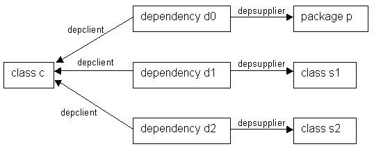

| Prev - Next - Down | SDMetrics - the UML design measurement tool |

Figure 34: Example dependency links
Class c is the client in three dependency relationships with three suppliers: a package and two other classes. A UML 1.x dependency element links the client and supplier via its cross-reference attributes "depclient" and "depsupplier" (cf. metamodel element dependency in Appendix A.1 "Metamodel for UML 1.3/1.4"). We can specify a projection for the "depclient" relation for dependency elements:
<metric name="Dependencies" domain="class"> <description>The number of dependencies in which the class participates as client.</description> <projection relation="depclient" target="dependency" /> </metric>This projection retrieves the elements of type "dependency" where the given class is the client. For class c, this would get us d0, d1, and d2. So far so good, however, we are probably more interested in actual supplier elements. This is where attribute "element" comes in:
<metric name="SupplierElements" domain="class">
<description>The supplier elements of which the class
is a client.</description>
<projection relation="depclient" target="dependency"
element="depsupplier" />
</metric>
By specifying the attribute "element", the projection does not access
the dependency element, but the element referenced via the
"depsupplier" relation specified by the "element" attribute. In
Figure 34 above, this gives us p, s1, and s2. In other
words, the suppliers we want. To filter for suppliers of a certain
type, we specify the additional attribute "eltype" that indicates the
type of elements we are interested in:
<metric name="SupplierClasses" domain="class">
<description>The supplier classes of which the class
is a client in a dependency.</description>
<projection relation="depclient" target="dependency"
element="depsupplier" eltype="class" />
</metric>
This projection now only returns supplier classes (s1 and s2 for class
c in the above example).Note that the value of the "element" attribute is a metric expression. In addition to cross-reference attributes, you can specify arbitrary metric expressions that return model elements (see Section 8.5.2.2 "Special Operators").
As with the "target" attribute, you can filter for several element types and/or subtypes with the "eltype" attribute. Just separate the additional element types with a "|", and precede types whose subtypes should also be admitted with a "+", for example: eltype="+class|interface|+datatype".
| Prev | Up | Next |
| Section 8.1.1.3 "Filter Attribute "target"" | Contents | Section 8.1.1.5 "Filter Attributes "condition" and "targetcondition"" |